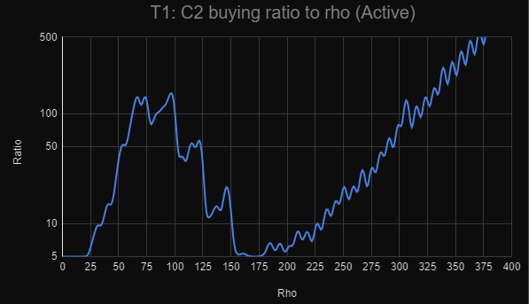
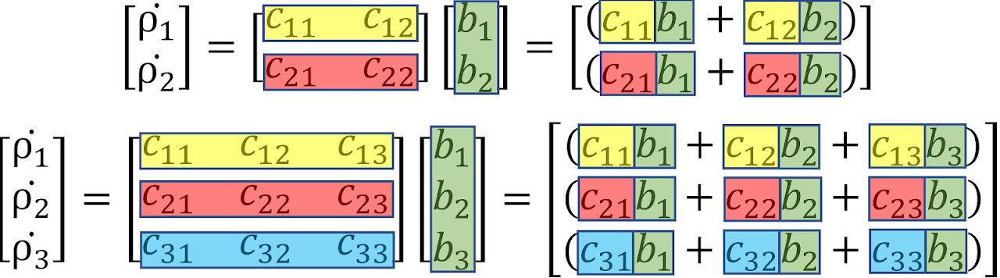

Previous: Progress ee2000 to ee5000
This is where the game gets interesting. Starting for 5k, every thousand ft you will unlock another theory. Unlike the main equation, setting
theories to sit on full autobuy is usually and bad idea, and one always has to decide which theory to do. I find theories are the most fun part of
the game.
Theories all vary from one another, with each theory having different strategies, and are based of different mathematical ideas.
Disclaimer: This is a simplified version of the guide. The guide will skip over things, and is not completely optimal. Click here for a more polished, in-depth, and optimal guide.
See each individual theory
If you are stuck for more then expected. Are you:
5k -> 5.2k -> 5.6k -> 5.8k -> 6k -> 7k -> 8k -> 8.4k -> 8.6k -> 8.8k -> 9k
Publications are equivalent to prestiges for ft, so don't be afraid to use them. For the majority of theories, the optimal pub multi is below 20, though it varies by theory the notable exception is t2, which has an optimal pub multi in the thousands
Each theory provides tau, equal to the maximum rho you have reached. Your total tau is the product of the tau from each theory. \(\tau = \tau_1 \times \tau_2...\)
Each theory has milestones which speed up progress. You can always respec milestones and shuffle them around, so you can experiment as much as you wish. Some milestones provide instant benefits, whilst others can take longer the bear fruit. Some milestones are stronger than others
You do not have to "complete" a theory to move on to the next one, nor do you have to stop a theroy when you get all milestones. Play whiever theory is fastest
The milestone route is a list of distributions, from top to bottom. For example: 0/0/1/0, means you should buy 1 of the 3rd milestone from the top. Sometimes, buying milestones unlocks new ones, which can change what is shown. These are presented in a list.
Here is an example distribution: 0/1/0 -> 1/1/0/0 -> 0/0/3 -> 1/1/0/1 -> 1/1/3/1
This means you should start by buying the 2nd milestone, then get the first milestone, which unlockes the 4th milestone. Then, when you get 3 milestones, respec your milestones and put them in the 3rd milestone, later, you should respec those milestones out of the 3rd milestone and put them in the 1st, 2nd, and 4th milestones. Finally, the next 3 milestones should go into the 3rd milestone
There are some strategies that appear in many/all theories:
Doubling strats are strats where you hold off buying stepwise variables to save up for more powerful doubling variables, by only buying stepwise variables at 10x less than doubling variables. They will usually have a d after their name. For example: t1d is the doubling strat for t1 (used only in 0-1e25), where you buy the stepwise variables \(q_1\) and \(c_1\) only when they are 10x lower than the cheapest doubling variable (\(min(q_2, c_2)\)) in order to save up for them
Competing variables is when variables are added up. This means that the lower variable is "weaker" than the higher variable, because increasing it has less of an affect. Take this example: \(\dot{ρ} = c_1 + c_2\), where \(c_1\) and \(c_2\) are both doubling variables. If \(c_1 = 10\), and \(c_2 = 1\) million, obviously, increasing \(c_1\) to something like 20, even though it's being doubled, has not much of an affect. Therefore, one should not buy \(c_1\)
Note that even though these levels of activeness are given, it is almost always to play a new theory a good amount (~1e100 tau) although if you don't reach that when you unlock the next theory MOVE ON
It as always best to use the theory simulator to find out what theory to push.
For info on the thoery sim read here
Note: Most of the time in this game, when this guide refers to ticks, It means 0.1 seconds. However, in t1 it is different, as the tickspeed of t1 is controlled by \(q_1q_2\). Therefore, in the guide, 1 tick in T1 is equal to \(\frac{1}{q_1q_2}\) seconds, and even though the actual game still actually only performs 10 ticks per second, this should not make any noticeable difference.
A recurrence relation is an equation that takes an initial term and changes it to get the next term. For example, take the following recurrence relation as an example: \(\rho_n = \rho_{n-1}+1\). Lets say \(\rho_0 = 0\). Thus \(\rho_1 = \rho_{1-1} + 1 = \rho_0 + 1 = 0 + 1 = 1\). And then \(\rho_2 = \rho_1 + 1 = 2\), and so on.
The theory works the same way. Every second, n increases by \(q_1q_2\) (thats what the tickspeed means), and \(\rho_n\) is \(c_1c_2\) + ... greater than the previous (\(\rho_{n-1}\)).
You can think of it like this: every second, \(\rho\) increases by \(q_1q_2\) times everything on the right of \(\rho_{n-1}\). So, without any milestones, \(\rho\) increases by \(q_1q_2c_1c_2 (\times p_{ubmulti})\) every second.
After getting a few milestones, you may notice that your current value of \(\rho\) is in the bit that tells you how much \(\rho\) is going to increase. (for example, the \(c_3 \rho_{n-2}^{0.3}\)) This means the current* value of rho impacts how much it is going to increase in the next second/tick.
*it's actually the value of \(\rho\) 2 ticks or \(\frac{1}{q_1q_2}\) seconds ago, but it shouldn't matter
t1's pub multi has no best fit, as it fluctuates alot, but here is known:
Before the first milestone the strategy is simple doubling strats, as the equation here is almost the simplest possible:
\(\dot{\rho} = q_1q_2c_1c_2\).
0 - e25 strats:
| T1d | |
|---|---|
| \(q_1\) | Cost is 10x less than \(min(q_2, c_2)\) cost |
| \(q_2\) | Always Buy |
| \(c_1\) | Cost is 10x less than \(min(q_2, c_2)\) cost |
| \(c_2\) | Always Buy |
After unlocking the term \(c_3\rho{n-2}^{0.3}\), the theory becomes more interesting. because \(\dot{\rho}\) is based on the current value of
\(\rho\), buying upgrades immediately means you actually will, for a bit, make you slower, which you don't want. Therefore, you want to wait
before buying upgrades.
That is the basis of the strat t1Ratio, where you buy upgrades at a ratio to \(\rho\).
| T1ratio | |
|---|---|
| \(q_1\) | Cost is 10x less than \(\rho\) |
| \(q_2\) | Cost is 1.1x less the \(\rho\) |
| \(c_1\) | Cost is 10\(c_2 ratio\)x less than \(\rho\) |
| \(c_2\) | Cost is \(c_2 ratio\)x less than \(\rho\) |
| \(c_3\) | Cost is \(c_3 ratio\) less than \(\rho\) |
| \(c_4\) | Always Buy |
\(c_2\) ratio
\(c_3\) ratio
| \(\rho\) | \(c_3\) ratio |
|---|---|
| < 1e300\(\rho\) | 1 |
| 1e300 - 1e450\(\rho\) | 1.1 |
| 1e450 - 1e550\(\rho\) | 2 |
| 1e550 - 1e625\(\rho\) | 5 |
| > 1e625\(\rho\) | 10 |
The overdot notation is Newton's notation for "derivative with respect to time". Essentially, \(\rho\) increases by \(\dot{\rho}\) every second, so if your \(\rho\) is 2 and your \(\dot{\rho}\) is 1, after 1 seconds your \(\rho\) will be 3, after another second \(\rho\) will be 4, ect. This overdot notation applies to other variables, \(q_1\) increases by \(\dot{q_1}\) every seconds.
Another word used is "derivative". \(\dot{\rho}\) is the derivative of \(\rho\)
Each upgrade doesn't increase the value of a variable directly, but increases it's derivative, meaning it increases faster. This has the side affect of upgrades taking a while to pay off
For this theory, you have a bunch of upgrades that use derivatives, and, because of the way they work, upgrades don't give immediate speed, they can take a while to build up. For example, increasing \(\dot{q_2}\) makes \(q_2\) increase faster. This increase in \(q_2\) means that eventually it will make \(q_1\) grow faster, and finally after even longer, this will make \(\rho\) increase faster. As a side affect, there are things that feel immediately faster but are actually slower. Also, because so many things are dependant on time, recovery takes a long time, and waiting makes things faster, so this theory has unusually high pub multis
Click here for a more in depth overview
1k - 10k
In T2. as all variables scale with time, if you are going to buy an upgrade, it is in your best interest to buy them as soon as possible. Thus, with most t2 strategies, you will have all your upgrades on full autobuy all the time. Apart from just leaving it on full autobuy, there are 2 main strats for the start of T2 (pre full milestones). They are all Milestone swapping strats, meaning that when doing them you will swap around your milestones.
These strats are created because new variable milestones give a long term boost, whilst exponents give a short term boost. Thus, swapping the exponents for the short term boost allows you to take advantage of both types of milestones. For the follwowing strategies, you will Autobuy all. The milestone swapping strategies are:
This strategy is really simple. Follow the milestone route as usual during the majority of the publication. however, at the very end, right before you publish, swap from new variables to exponents (prioritise q exponent, than r exponent, than q variables, than r variables or 0/0/3/0 -> 0/0/3/3 -> 2/0/3/3 -> 2/2/3/3). This is because exponents give you a large short term boost which gives you a lot of extra tau right before you publish
This strategy is like t2QS except you do the milestone swapping throughout the publication. The notation used here is a -> b -> c -> d. This means max out milestone a (from the top), than with leftover milestones max out b, than c, than d. So 1 -> 2 -> 3 -> 4 would be from top to bottom (which is the milestone route used for t2). T2MS goes:
After reaching full milestone there is no* active strat for t2, so it's pure idle, just leave it on full autobuy
Read here for a more in depth strategy guide
*semi idle strat can be found here
T3 is based on the idea of matrix multiplication. Matrices are "multi-dimensional numbers", and have weird multiplication rules, as shown below:
Thus we can see that a variable \(c_{ab}\) costs \(\rho_b\) and helps produce \(\rho_a\), which shows the interconnection between currencies
These equations show how T3 has many competing variable and which upgrades are more powerful than others. Getting a 3rd dimension is roughly a 50% increase to \(\dot{\rho_1}\)
The goal of T3 is to get as much \(\rho_1\) as possible. The use of the other 2 currencies is to buy, \(c_{12}\), \(b_2\), \(c_{13}\), and \(b_3\) which increase \(\rho_1\).
2 - 3 Without cruising
3 - 4 With cruising
Cruising refers to turning off all upgrades (in this case all \(\rho_1\) upgrades only, because it's the only thing that contributes to pub multi) and let your \(\rho_1\) build up, which is faster short term and allows you to get a higher pub multi. For T3, once you reach between 2 - 3 pub multi, start coasting till you're between 3 - 4 and then publish
For the idle versions of the strat, ignore any conditions and just autobuy all variables that are not "Never Buy" (i.e. variables that would have been bought at some point)
The overall strategies you should be doing are:
| \(b_1\) | When cost is \(\frac{1}{7}\) of \(min(c_{11} cost, c_{21} cost)\) |
| \(b_2\) | When cost is \(\frac{1}{7}\) of \(c_{12}\) cost |
| \(c_{11}\) | Always buy |
| \(c_{12}\) | Always buy |
| \(c_{21}\) | Always buy |
| \(c_{22}\) | Never buy |
This is an example of the corresponding idle strat to strategy T3C11C12C21d
| \(b_1\) | Always buy |
| \(b_2\) | Always buy |
| \(c_{11}\) | Always buy |
| \(c_{12}\) | Always buy |
| \(c_{21}\) | Always buy |
| \(c_{22}\) | Never buy |
| \(b_1\) | When cost is \(\frac{1}{10}\) of \(min(c_{21} cost, c_{31} cost)\) |
| \(b_2\) | When cost is \(\frac{1}{4}\) of \(min(c_{12}, c_{22}, c_{32})\) cost |
| \(b_3\) | When cost is \(\frac{1}{10}\) of \(c_{23}\) cost |
| \(c_{11}\) | Never buy |
| \(c_{12}\) | Always buy |
| \(c_{13}\) | Never buy |
| \(c_{21}\) | Always buy |
| \(c_{22}\) | Always buy |
| \(c_{23}\) | Always buy |
| \(c_{31}\) | Always buy |
| \(c_{32}\) | Always buy |
| \(c_{33}\) | Never buy |
T4 is a simple polynomial in which there are 5 terms, each corresponding to a power of q. Polynomials are equations in the form \(a + bx + cx^2 + dx^3...\), except in this case it's q instead of x and the coefficient a, b, c... are what you upgrade, along with \(\dot{q}\). The value of q is constantly being increased by \(\frac{q_1q_2}{1+q}\) This means the the value of q is affectively limited. These are "competing variables" as explain in the general section.
Other than that, t4 is very simple and should not require that much explanation
The pub multi of T4 depends on what strategy you are performing:
In T4 there are competing terms. Therefore, based on which one is the strongest at a given time/milestones you should focus on different terms. However, if that term is not \(c_1c_2\) you also want to focus on \(q_1q_2\) because q affects all other terms.
The overall strategies you should be doing are:
If you are unable to publish at the ideal pubmulti, and end up publishing with a higher pub multi (6+), you should do strategy T4C456 intsead from 1e25 to 1e75
| \(c_1\) | When \(\frac{1}{10}\) of \(c_2\) cost |
| \(c_2\) | Always buy |
| \(c_3\) | Never buy |
| \(c_4\) | Never buy |
| \(c_5\) | Never buy |
| \(c_6\) | Never buy |
| \(q_1\) | Never buy |
| \(q_2\) | Never buy |
| \(c_1\) | Never buy |
| \(c_2\) | Never buy |
| \(c_3\) | Never buy |
| \(c_4\) | Always buy |
| \(c_5\) | Always buy |
| \(c_6\) | Always buy |
| \(q_1\) | Always buy |
| \(q_2\) | Always buy |
| var | Recovery | Tau gain |
|---|---|---|
| Milestones | 2 > 1 > 3 | 1 > 3 > 2 |
| \(c_1\) | When \(\frac{1}{10}\) of \(c_2\) cost | Never buy |
| \(c_2\) | Always buy | Never buy |
| \(c_3\) | Never buy | Never buy |
| \(c_4\) | Never buy | Always buy |
| \(c_5\) | Never buy | Always buy |
| \(c_6\) | Never buy | Always buy |
| \(q_1\) | Always buy | Always buy |
| \(q_2\) | Always buy | Always buy |
Next: Theories 5 to 7